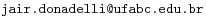
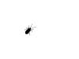

| Jair Donadelli |
ContatoCentro de Matemática, Computação e Cognição Universidade Federal do ABC Avenida dos Estados 5001 - Bairro Santa Terezinha Santo André, SP - CEP 09210-580 (11) 4996 8342 - Sala 546, torre 2, bloco A

|
[+] Lecionações |
[+] Orientações |
[+] Escrevinhações |
[+] procrastinações  |
Em geral, registro e disponibilizo minhas notas de aulas e outras coisas que eu estudo (críticas e sugestões são bem vindas, nem sempre o material foi devidamente revisado). Meus interesses de pesquisa são centrados em Pseudoaleatoriedade e Probabilidade em estruturas discretas e, de modo geral me interesso por quase qualquer coisa que envolva probabilidade, combinatória e teoria da computação e, mais recentemente, a ligação desses temas com a física.